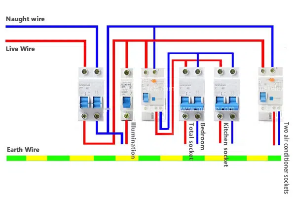
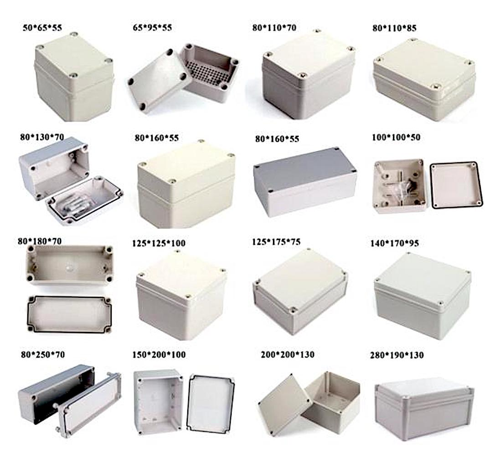

Elements
This section provides detailed information about the elements commonly used in house wiring, such as:
- Fuses and Circuit Breakers: These devices are crucial for protecting electrical circuits from overloads and short circuits. Fuses contain a thin strip of metal that melts if too much current flows through it, breaking the circuit and preventing damage to appliances or wiring. Circuit breakers perform a similar function but can be reset manually or automatically after tripping.

- Electric Switch: A switch is used to control the flow of electricity to lights, appliances, and other electrical devices. It allows users to turn these devices on or off as needed, providing convenience and safety in electrical installations.
- Plug: This component allows electrical devices to connect to power sources such as wall outlets or extension cords. Plugs consist of prongs that fit into socket outlets, ensuring a secure and reliable electrical connection.
- Socket Outlet: A socket outlet provides a connection point for plugs to access electricity. It is installed in walls or fixtures and allows electrical devices to be powered conveniently. Socket outlets come in various types to accommodate different plug designs and voltage requirements.

- Lamp Holder: Also known as a bulb socket, a lamp holder is used to hold and connect light bulbs to electrical circuits. It provides the necessary electrical connection for the bulb to receive power and illuminate spaces in homes, offices, and other environments.
- Main Switch: This switch controls the main power supply to an entire house or building. It allows users to disconnect power from all circuits at once, providing a safety measure during maintenance or emergencies.
- Incandescent Light: This type of light bulb produces light by heating a filament wire inside a glass bulb until it glows. Although less energy-efficient than newer technologies like LEDs, incandescent lights are still used in various applications due to their warm light quality.
- Electrical Wiring: Wires and cables carry electricity throughout a building, connecting electrical components and devices to power sources. They are typically made of copper or aluminum conductors insulated with materials like PVC or rubber to protect against electrical hazards.
- Junction Box: Used to protect and organize electrical connections, junction boxes enclose wire connections to prevent accidental contact and secure them against environmental elements. They are essential for maintaining electrical safety and ensuring reliable operation of electrical systems.
